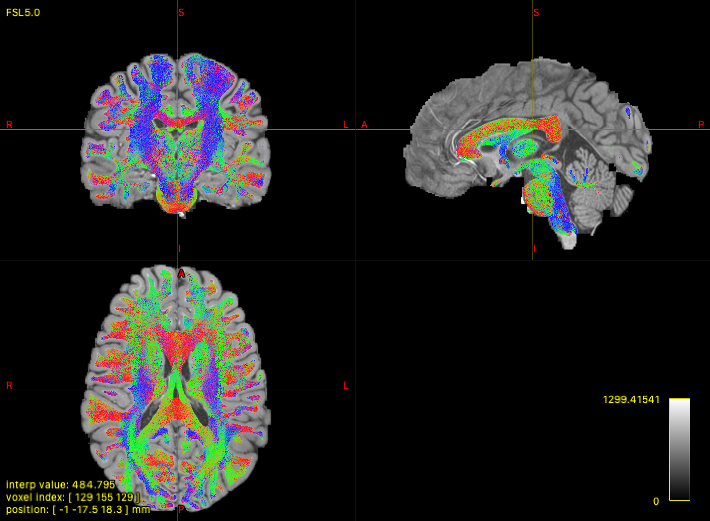
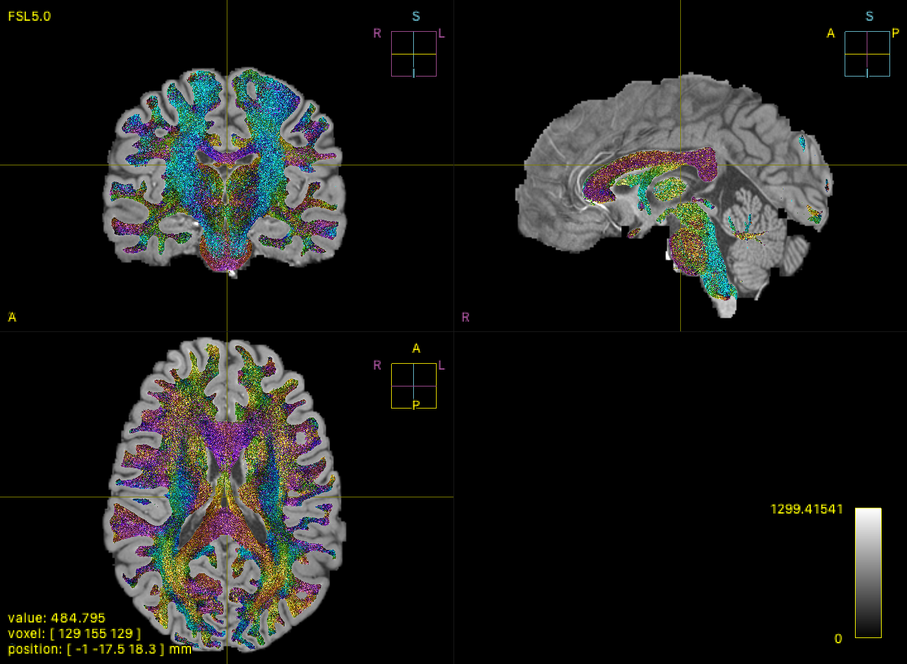

MRTrix3 Color Mapping Enhancement
This document describes the custom color mapping system implemented in a fork of MRTrix3 for enhanced fiber tractography visualization, replacing the standard RGB directional encoding with a perceptually optimized CMYK-like color scheme.
Color Transformation Process
The transformation from standard RGB directional encoding to the custom color space involves a lookup table stored in a BMP file. The process works as follows:
RGB to Index Conversion
Each fiber direction's RGB components (ranging from 0-1) are converted to a single integer index:
pos = int(colour.r*255) + int(colour.g*255)*256 + int(colour.b*255)*65536
This creates a unique position in the lookup table for each possible RGB combination.
Color Lookup
The calculated position is used to retrieve a new color from the lookup table:
colour.r = texelFetch(u_color_mapper, 3*(pos+18)).r
colour.g = texelFetch(u_color_mapper, 3*(pos+18)+1).r
colour.b = texelFetch(u_color_mapper, 3*(pos+18)+2).r
Where the offset (18) accounts for the BMP file header.
GLSL Implementation
int pos = int(colour.r*255) + int(colour.g*255)*256 + int(colour.b*255)*65536;
colour.r = texelFetch(u_color_mapper, 3*(pos+18)).r;
colour.g = texelFetch(u_color_mapper, 3*(pos+18)+1).r;
colour.b = texelFetch(u_color_mapper, 3*(pos+18)+2).r;RGB vs CMYK-like Color Comparison
Below is a comparison of tract visualization using the standard RGB directional encoding versus the enhanced CMYK-like color mapping.
Standard RGB Encoding (2D)

Standard RGB coloring (2D axial view)
Enhanced CMYK-like Encoding (2D)

CMYK-like coloring (2D axial view)
BMP Lookup Table Visualization (out2.bmp)

The BMP lookup table used for color transformation